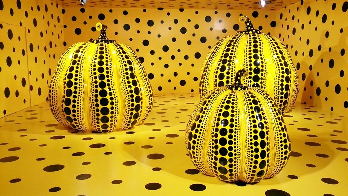
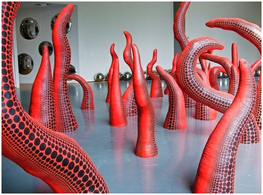
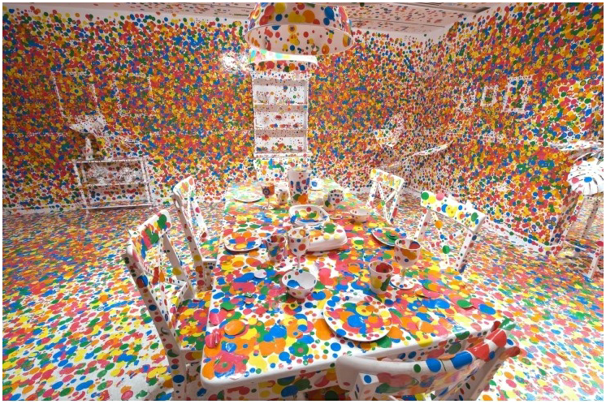

|
|
|
쿠사마 야요이 Kusama Yayoi |
|
| 본명 | 쿠사마 야요이 (草間 彌生, くさま やよい) |
|---|---|
| 출생 | 1929년 3월 22일 (90세), 나가노 현 마츠모토 |
| 국적 | 일본 |
| 학력 | 1948년 교토시립예술대학교 |
| 직업 | 조각가, 현대 미술가 |
| 수상 |
2003년, 프랑스 예술 문화 훈장 2001년, 아사히상 수상 2000년, 외무부장관 표창 |
| 링크 | 공식 사이트 |

|
|
|
Narcissus Garden 1966 |
|
| 1952년 23세 때 마츠모토 시민 회관에서 열린 전시에서 나가노 대학의 정신 의학 교수인 니시마루 시호 박사에 의해 자신에게 정신질환이 있다는 것을 알게 된다. 시호 박사는 그녀의 작업에 지속적인 관심을 가질 수 있게 도와주었고 이후 1966년 베니스 비엔날레에서 그녀는 초청받지 못한 작가로서 전시장 앞 잔디에 약 1500여개의 물방울 무늬 오브제를 깔아놓는다. '개당 2달러!' 였던 구사마의 사인이 적힌 수많은 물방울은 관람객의 관심을 받았고 이듬해 베니스 비엔날레의 초청장을 받게 된다. |
|  | |
|
Kusama with Pumpkin 1994 |
|
| 쿠사마 야요이는 호박에 대해 이렇게 말했다. "호박은 애교가 있고 굉장히 야성적이며 유머러스한 분위기가 사람들의 마음을 끝없이 사로잡는다. 나, 호박 너무 좋아 호박은 나에게는 어린시절부터 마음의 고향으로서 무한대의 정신성을 지니고 세계 속 인류들의 평화와 인간찬미에 기여하고 마음을 편안하게 해주는 것이다. 호박은 나에게는 마음속의 시적인 평화를 가져다준다. 호박은 말을 걸어준다. 호박, 호박, 호박 내 마음의 신성한 모습으로 세계의 전 인류가 살고있는 생에 대한 환희의 근원인 것이다. 즉, 호박 때문에 나는 살아내는 것이다." |
|  | |
|
The moment of Regeneration 2004 |
|
| 쿠사마 야요이는 현 작품을 통해 현재 사회에 팽배한 남성 우월주의에 대해 말하고자 했다. 작품에 나오는 촉수는 곧 남성의 성기이자 남성들의 우월주의의 실체화이며 구체화되어 형용된 모습이며 이를 통해 쿠사마 야요이는 그들에게 잠식당한 사회의 모습을 이야기 한다. |
|  | |
|
Obliteration Room 2002 |
|
| 쿠사마 야요이는 작품에 관해 이렇게 말했다. "뉴욕에서 어느 날 캔버스 전체를 아무런 구성없이 무한한 망과 점으로 그리고 있었는데 내 붓은 거의 무의식적으로 캔버스를 넘어 식탁, 바닥, 방 전체를 망과 점으로 뒤덮기 시작했다. 놀랍게도 내 손을 봤을 때, 빨간 점이 손을 뒤덮기 시작했고 내 손에서부터 점이 번지기 시작해서 나는 그 점을 쫓아가기 시작했다. 그 점들은 계속 번져가면서 나의 손, 몸 등 모든 것을 무섭게 뒤덮기 시작했다. 나는 너무 무서워서 소리를 질렀고 응급차가 와서 병원에 실려갔다. 의사가 진단하기를 몸에는 별다른 이상이 없고 정신이상과 심장수축 증상에 대한 진단이 나왔다. 이러한 사건 이후에 나는 조각과 퍼포먼스의 길을 택하게 되었다. 내 작업의 방향 변화는 언제나 내적인 상황에서 나오는 불가피한 결과다." |
| 쿠사마 야요이 관련 잡다한 기타 지식 | |
|
|